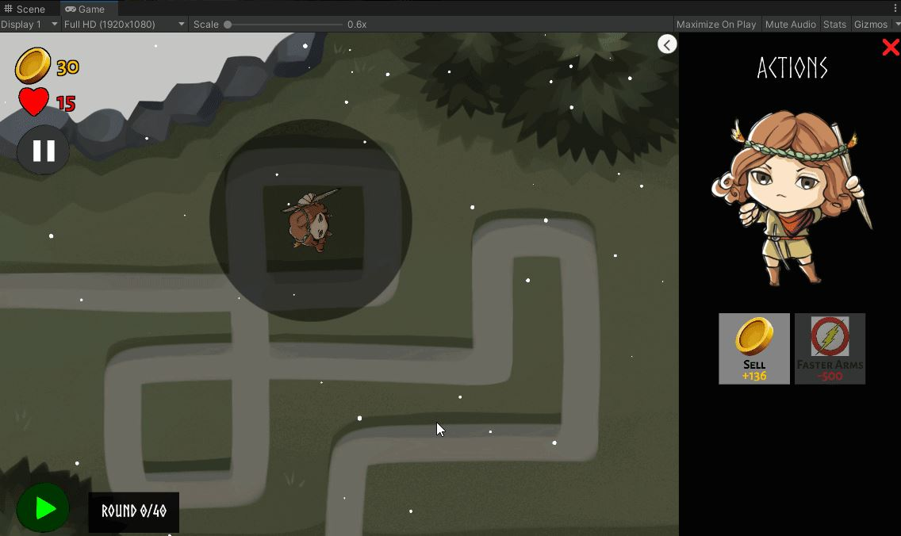

Studio-wide & Project Tower Meetings
There is so much stuff to talk about in this final devblog! I'll kick off by saying that meetings haven't been much different this sprint. Same old, same old. I did arrange a small celebration for both projects for Sunday 12/12, though, which was a really nice way to congratulate everyone for making it through another semester.
Project Tower UI Overhaul
In response to some feedback that we received in a playtest with Jordan Ajlouni, I made very significant UI changes which had been sitting in the backlog for ages. I also began fixing a few minor things that I felt seriously took away from the professionalism of the game.
In the video above, we have an intermediary glimpse of some of the first changes I made:
- Previously, the tower range icon was just a default Unity circle that turned neon red and neon green, depending on whether or not you could place a tower there. It was pretty painful to see. I changed it to a softer grey circle, reminiscent of the tower range display from Bloons TD 6.
- The tower description text used to overflow all the time. Also a little painful, especially for first-time playtesters.
- There used to be a LOT of negative space in the Tower selection UI, which made it feel as though something were missing. I changed out the background sprite entirely (it used to be a black rectangle) and began experimenting with a more interesting shape/color. As you can see above, it's not exactly themed with the rest of the game at this point, so I do end up changing it further later.
- I removed dynamic spawning altogether from the tower actions screen. Given that each tower is guaranteed to have two upgrades, and each tower is guaranteed to have a sell button, it really makes no sense that these buttons are instantiated at runtime. The system itself is understandable, but for our purposes, it was a lot easier to make aesthetic changes after I made everything static.
But of course, the above wasn't it. Game UI is really tricky to get right, because the smallest things can make an otherwise excellent game look amateur-ish. This is - of course - subjective, but I felt that we could do even better. Thus, we step into discussion on "part 2" of the UI overhaul.
Disclaimer - I didn't touch the main menu at all (I only mention this as the video above briefly displays the main menu). I completely changed the visual theming of the UI, both in-game and in our narrative scenes. I moved in the direction of stone tablets, which I felt was appropriate with the Norse-inspired visual of our game (with rune stones and what-not). I also moved certain elements of the UI around, such as the pause and play buttons, in an attempt to make their placement more intuitive.
Additionally, I made a small change that updates tower portrait art with tower upgrade purchases (this way, we can see all of our artists' work)! I added tooltips to the tower purchase screen to make them a bit more readable. Finally, I enforced some consistency in our font choice. Whilst performing these UI changes, I also added small visual tweaks (such as a few new 2D lights) and integrated some final art assets into the game.
While the end product certainly isn't close to perfect, I do think the experience feels a bit more polished as a result of these changes. For reference, this is what the UI looked like before these changes:
Final Narrative Art
There's not too much to say here, other than that I finalized the narrative portrait art for Revna and Yrsa! Revna looks very similar (but a lot less sketchy). I made some big changes to Yrsa, as I wasn't very proud of how her sketch came out. I gave both characters a couple different expressions.
Cover Art
The star of the show - the cover art!